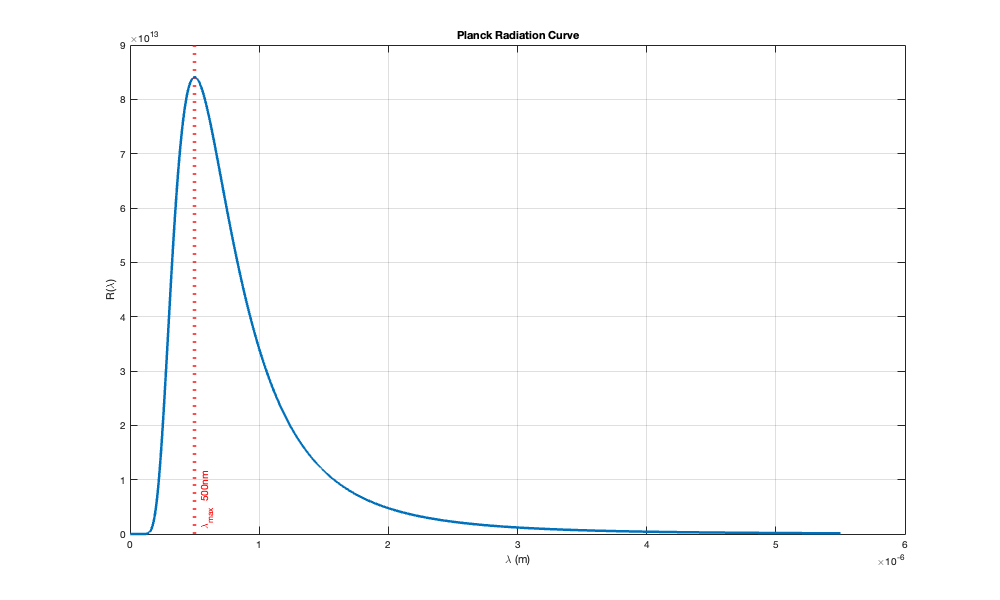

% ECE 235 % % Lab 2 - Part 2 % Sidorian Pandovski % Question 3-25 % The orbitting space shuttle moves around Earth well above 99 percent of % the atmosphere, yet it still accumulates an electric charge on its skin % due, in part, to the loss of electrons caused by the photoelectric % effect with sunlight. Suppose the skinskin of the shuttle is coated with % Ni, which has a relatively large work function of phi = 4.87 eV at the % temperatures encountered in orbit. % a) what is the maximum wavelength in the solar spectrum that can % result in the emission of photoelectrons from the shuttle's skin? % % b) what is the maximum fraction of the total power falling on the % shuttle that could potentially produce photoelectrons % a) to be done on paper, checking answer in MATLAB % defining constants and givens phi = 4.87; % electron Volts c = 3.000E008; % meters/second h = 6.626E-34; % Joule seconds eV = 1.602E-19; % electron K = 1.380E-23; % Joules/Kelvin b = 2.900E-03; % meter Kelvin % defining parameters lPeak = (h * c)/(phi * eV); T = b/lPeakSun; disp(['Lambda Max is: ' num2str(lPeak*10^9)]); % The peak wavelength shown is about 254. This is a correct value % b) to be done in MATLAB % setting up R(lambda) function lPeakSun = 500E-09; % Did this part in class 1/30/26 % setting up variables needed lambda = 1E-9:1E-9:(11*lPeakSun); rLam = (2*pi*h*c^2.*lambda.^-5)./(exp((h * c) ./ (lambda .* K * T)) - 1); % utilized AI to help format/fit curve figure('Position',[100 100 1000 600]); plot(lambda, rLam, 'LineWidth', 2.5); grid on; set(gca,'XScale','linear','YScale','linear'); % explicit linear axes xlabel('\lambda (m)'); ylabel('R(\lambda)'); title('Planck Radiation Curve'); xline(lPeakSun, 'r:', 'LineWidth', 3.5, 'Label', ['\lambda_{max} ' ... num2str(lPeakSun*10^9) 'nm'], 'LabelVerticalAlignment','bottom'); % setting up Reimann sum of R % vector Area: % left hand Reimann sum, where each box has the width of 1nm, and the % height is the left bound of the box Area = rLam .* 1E-9; rS = cumsum(Area); % -> This is the answer to part III) inserting % rSum(desired wavelength) will return the rough estimate for the power % density at that wavelength rSum = rS(end)/(T^4) % -> this value returned 5.63e-08 % while this is not perfect, it is only at about 0.75% error. This is % a fairly close approximation given that we are using a reimann sum. % now obtaining an accurate integral rLamInt = @(x) (2*pi*h*c^2.*x.^-5)./(exp((h * c) ./ (x .* K * T)) - 1); rInt = integral(rLamInt, 1E-9, lambda(end)) / (T^4) % -> this value also % returned 5.63 which is still a fairly close approximation but still off % for some reason. photoelectric = integral(rLamInt, 1E-9, lPeak); total = integral(rLamInt, 1E-9, 11*lPeakSun); fraction = photoelectric / total; % this number is the answer to part B % and was about 0.0115
Lambda Max is: 254.7893 rSum = 5.6296e-08 rInt = 5.6296e-08
